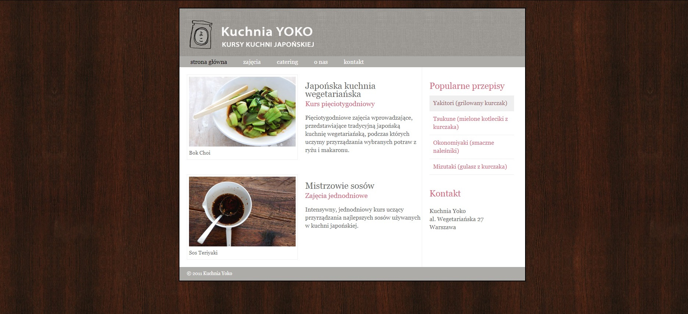
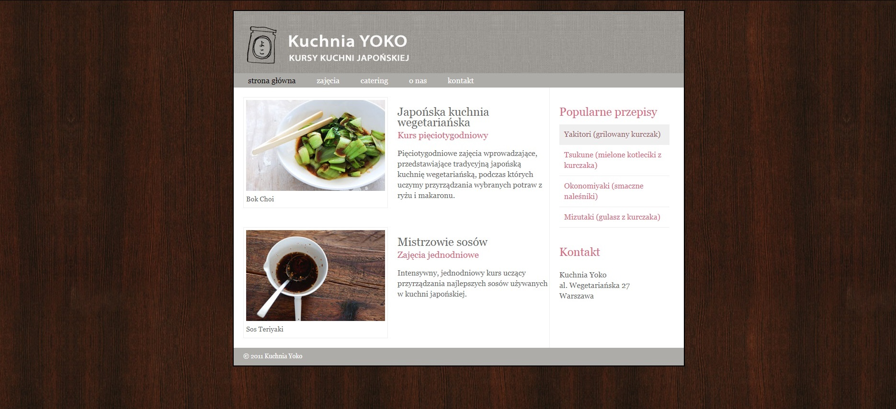

Sugerowane rozwiązania:
- czcionka - Georgia;
- kolor tła: #f9f8f6;
- color czcionki: #666666;
- po najechaniu na menu poziome(nawigacja): zmiana koloru czcionki na czarny
- po najechaniu na menu pionowe (prawy panel): kolor czcionki : #985d6a, kolor tła: #efefef
Screeny
 rys.1 Wygląd strony

rys.2 Zmiana w bloku prawym po najechaniu myszą
rys.3 Zmiana w nawigacji poziomej po najechaniu myszą
rys.1 Wygląd strony

rys.2 Zmiana w bloku prawym po najechaniu myszą
rys.3 Zmiana w nawigacji poziomej po najechaniu myszą